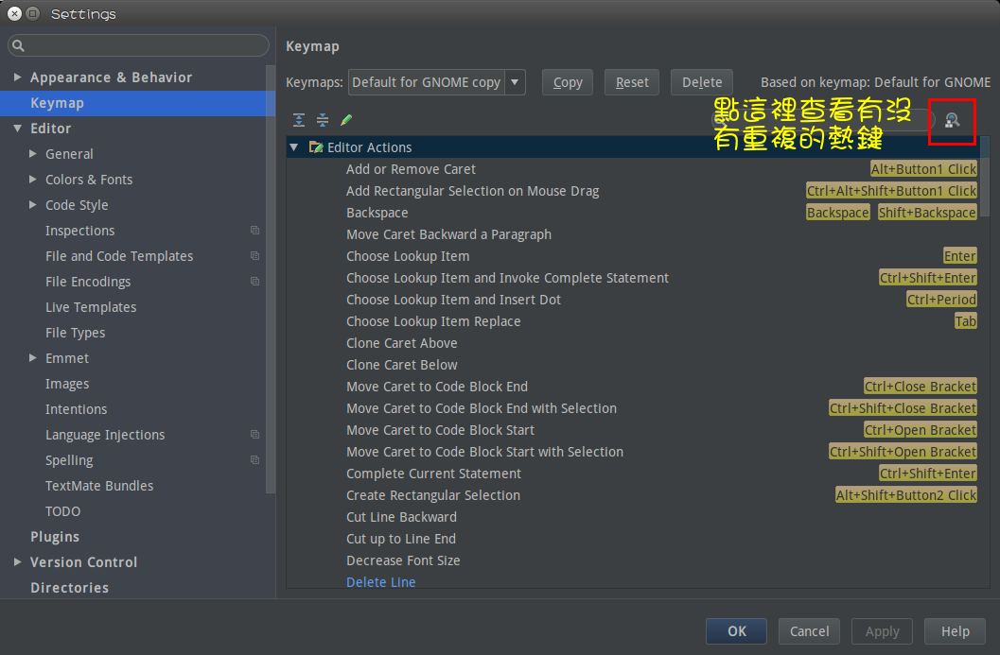
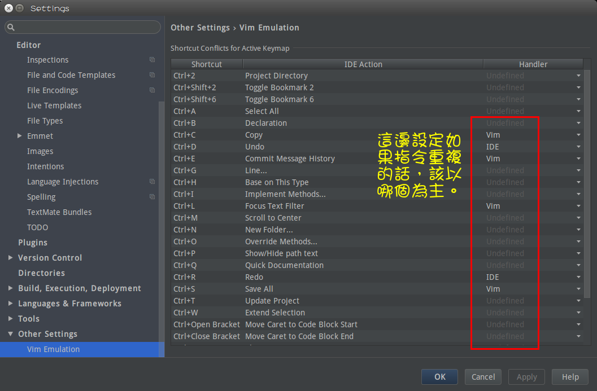

一般來說，大部分寫網頁的人，都會使用 atom 或 sublime 這兩個編輯器。而我個人在還沒開始寫網頁之前，就是使用vim，所以理所當然，之後也是使用vim來編寫網頁。
雖然 vim 這個老牌編輯器有很多很酷的手法，可以加速寫程式，但對於前端這樣一個快速飛漲的技術，也有一個相當大的缺點，便是插件數太少或太舊。這篇就來講一下如何將vim搭配Webstorm，提高寫網頁的速度。
其實atom也vim的套件，但這篇專注於如何設定webstorm。
想要使用atom來寫網頁的，可以參考平哥寫的文章
Webstorm 是 JetBrains 出的產品，專注於 javascript 這個語言。理所當然，JetBrains也出了專門其它語言的IDE，例如PHPStorm。
因為是專門為 javascript 設計的，所以相關插件如typescript、reactjs、angularjs，也都十分完善，連emmet這類快速寫html的套件也都有，甚至可以套在jsx上寫。
接下來一一介紹 webstorm + vim 要如何設定（因為我是使用 Ubuntu 和 Mac 做為開發系統，所以windows的部分，就請各位有緣人自己嘗試囉！）
安裝
載點，windows、Mac OS X、Linux 都有。
https://www.jetbrains.com/webstorm/
如果是linux的話，shell script 會在 bin 資料夾底下，執行他即可。而Mac OSX則是點擊他即可安裝。
安裝完後，可以使用學校信箱帳號來免費得到license，不然原本的可是要付錢的！
設定vim
因為這邊文章目前是在linux下撰寫，而 mac 和 windows 設定的名稱可能會有一些不一樣，所以請各位包含。
- File -> Settings (preferences for Mac) -> plugins -> Install JetBrain Plugins
- 輸入 IdeaVim，並安裝
搞定後，接著要匯入自己的vim的設定。
|
|
Tools -> Vim emulator 更換到
vim模式。因為原先webstorm的設定可能會和我們的vim設定檔有衝突到，所以接著要處理這個問題。
File -> Settings -> Keymap 更改熱鍵，也可以再上面 Keymaps的部分，更改不同作業系統適合的鍵盤。
若是有重複的熱鍵，就進行更改。
File -> Settings -> Other Settings 也可以設定當IDE和vim的指令重複時，該以哪一個指令為主。

設定其它
- File -> Settings -> Editor -> Colors & Fonts 設定
套色。這個部分很詳細，可以一個一個改，改成自己想要的樣子。 - File -> Settings -> Editor -> Code Style 設定
Code Style
Export settings
export是一個級好用的功能，像我得同時設定mac 和 ubuntu 兩套開發環境，使用export功能，就可以快速的弄好兩邊的設定。可以export的東西有很多，例如套色、keymaps……
結語
其實webstorm還有其它好用的功能，例如支援terminal……，我再問問看Rae有沒有要補充，他弄得比我熟XD
網路上有很多的教學資源，這邊補上一個：
https://www.youtube.com/watch?v=PNZJox8pkls&list=PLQ176FUIyIUb0zTe7k4ZKkhMsR-slKu3w
或等我研究 vim 和 webstorm 更深入後，再來補一篇吧！